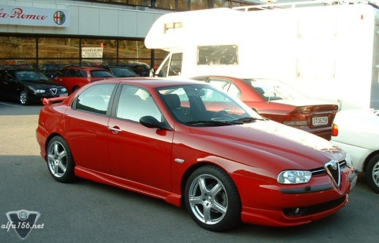
This 1.8 TS has 40 mm lowered Vogtland suspensions, Supersprint, MOMO GT2 17x8 with
225/45-17 TOYO, MOMO mirrorcovers + painted mirrors, MOMO pedals, MOMO gearknob,
MS Design styling kit, painted bumpers front and rear, painted break calipers,
Osram "Coolblue" lightbulbs in headlights, Kingdragon air filter and hifi system:
Panasonic TV-unit linked to a Panasonic CD-shifter (8 CDs) in glove department.
A Panasonic 4 channel amp (4x25W RMS) mounted in dashboard runs the six original
speakers. A Panasonic TV-receiver is mounted in the hatch. This one is connected
to two Pioneer TV-antennas wit built in signal enhancer mounted in the rear window.
The front amp gives signal trough two signal cables which is under the carpets in
the car to the amp in the trunk. This one is a Power Acoustik Gothic Series 840-4
(4x95W RMS). 2 Channels is serialconnected (delivers 210W RMS in mono) and
powers a 12" two spooled Pioneer sub(800W max). The sub is mounted in a 30 litre (appx)
box. The two other channels run one 6x9" 4-way Pioneer speaker (300W max) each,
these are mounted in the original brackets inside the hatch. The amp gets its power
directly from the battery by a 10 mm2 wire with a 40 amp fuse. It goes trough the
"torpedo wall" right abowe the pedals in an original hole there and goes then under
the carpet on the oposite side of the signal cables (to prevent noise). The ground
wire has been connected to one of the rear seatbelt mountings and is just as thick
as the battery wire. The cables goes trough a paralell Macrom condensator on 1 Farad
before they are connected to the speaker. This is to maintain a stable power supply
for the amp. Then the sub is lightened by black-light (just for show) which gets its
power from the left rear light. The sub-box is covered with a fabric very similar to
the trunk carpet.
Phew!
Owned by Vidar Ekren. Located in Bergen, Norway!
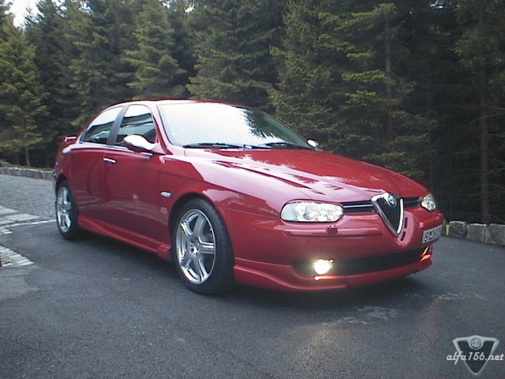
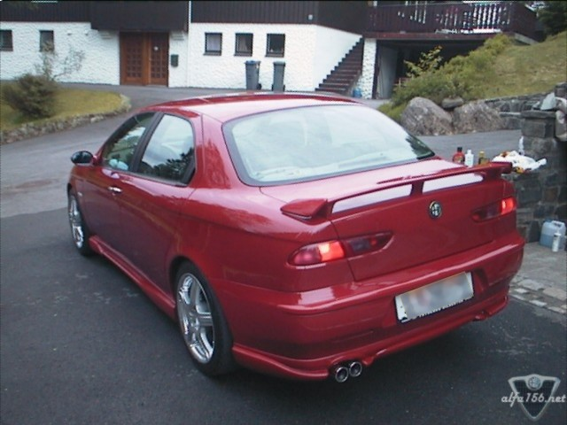
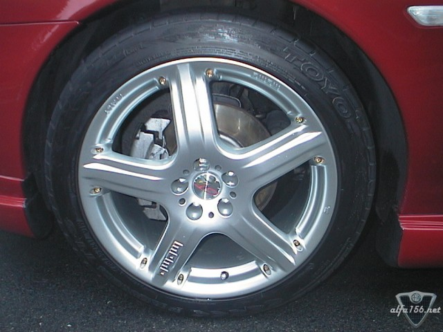
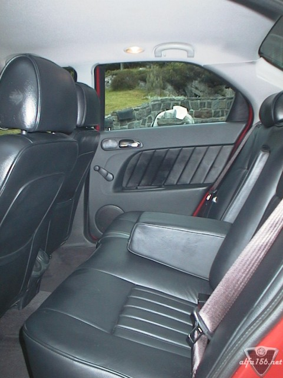
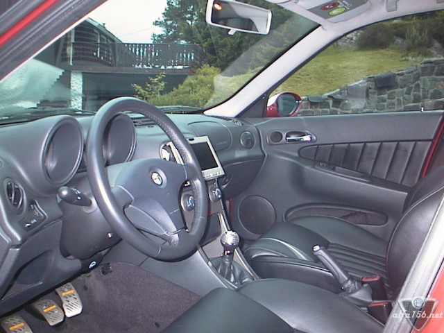
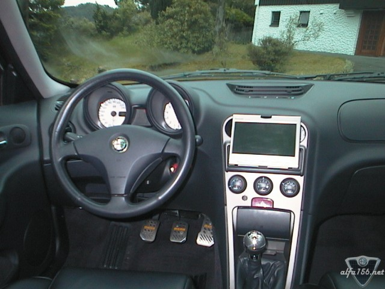
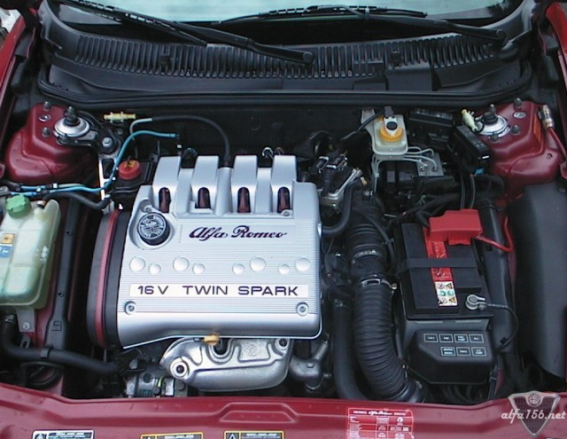
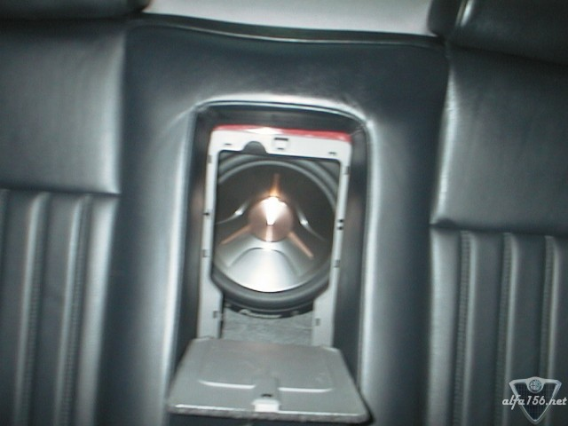
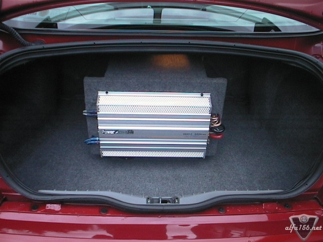
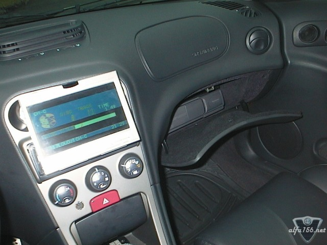
![[Prev]](bw_prev.gif)
![[Index]](bw_index.gif)
![[Next]](bw_next.gif)